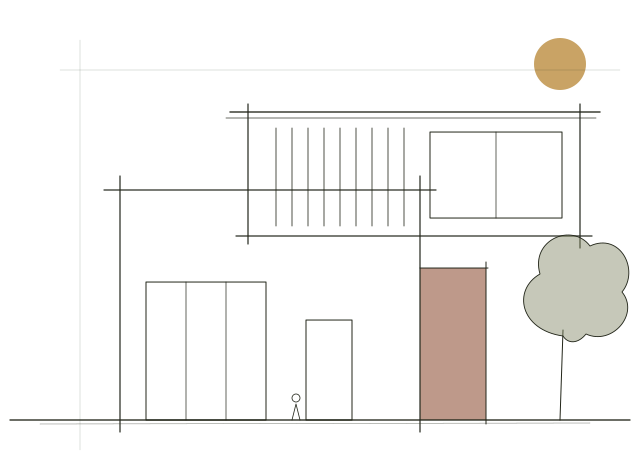
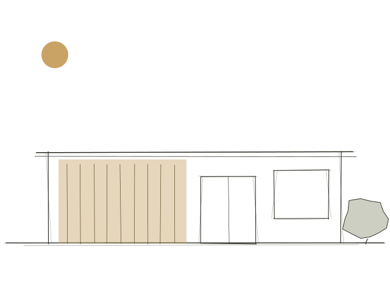
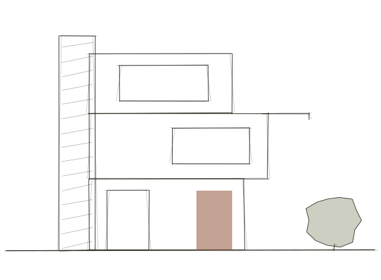
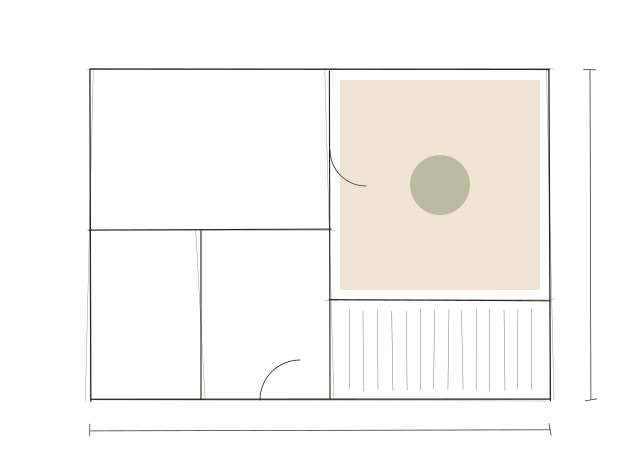

Contents
- IIThe architect and the authorAr. Saptarshi Kapri, and The 100 Decisions Before the First Brick
- IIIThe studioKuljeet, Krishma, Sanchit and [fourth member]
- IVPhilosophyA home is a hundred decisions, made in the right order.
- VWorkResidences, hotels, offices and convention centres
- VIContact3652/2, Green Field, Model Gram, Ludhiana